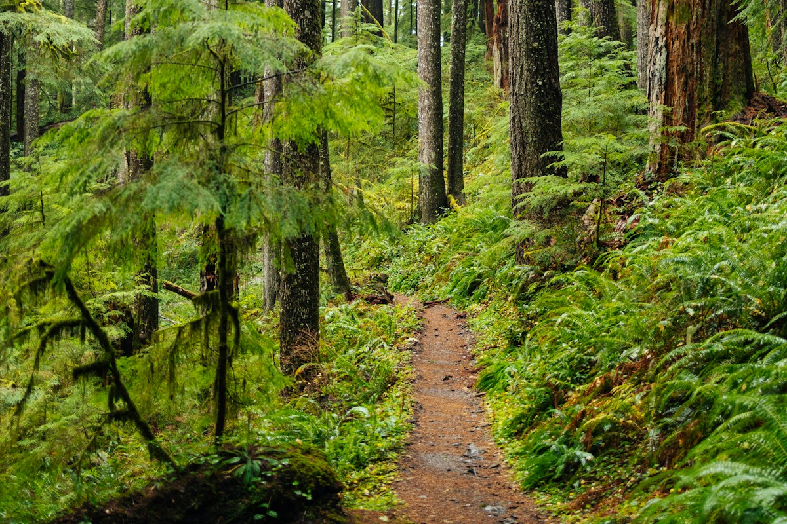
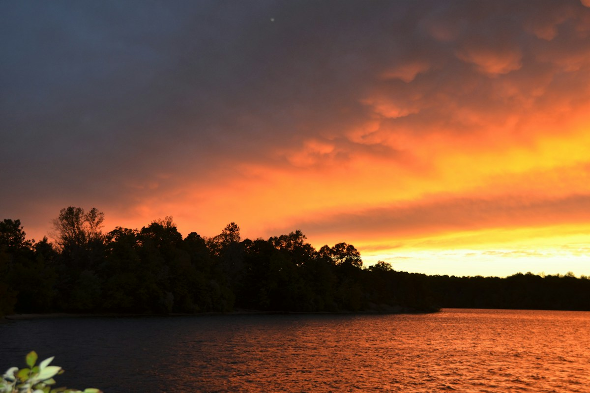

I used the same three photos in two different orders to explore how sequencing changes a story.
Click Beginning, Middle, and End in each story to change the photo and caption.
SEQUENCE 1 / PATH - BENCH - SUNSET
A Quiet Break
I go for a walk to clear my mind.
Beginning / 1 of 3

I feel stressed, so I follow a quiet path away from my busy day.
My interpretation: The path becomes an escape, the bench offers rest, and the sunset gives the story a peaceful ending.
SEQUENCE 2 / SUNSET - BENCH - PATH
Moving On
I return to a place that reminds me of a friend.
Beginning / 1 of 3

The sunset reminds me of the evenings I used to spend here with a friend.
My interpretation: The sunset introduces a memory, the empty bench suggests someone is missing, and the path represents moving forward.
What changes?
In the first story, being alone feels relaxing. In the second, it feels lonely before becoming hopeful. The images stay the same, but their order and captions change what I think they mean.
These are fictional stories told through collected photographs.